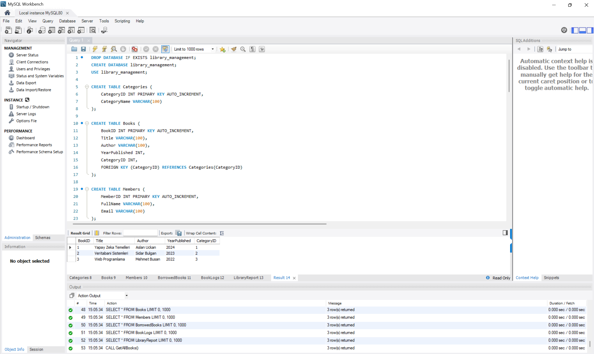
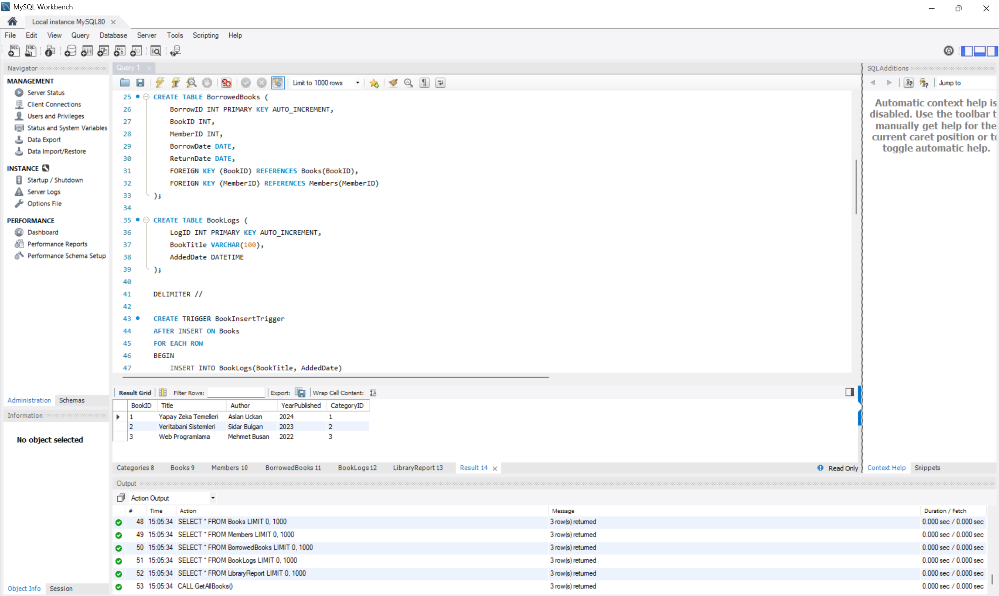
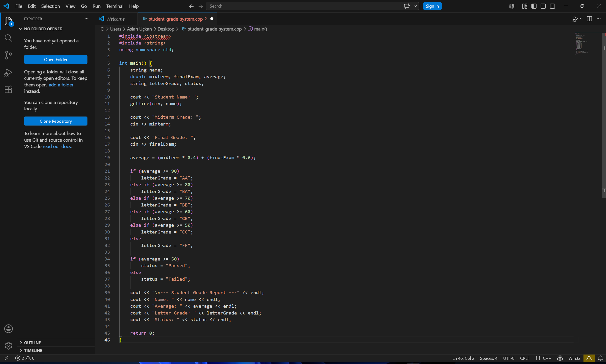

Aslan Asilcan Uçkan
Yönetim Bilişim Sistemleri Öğrencisi
Hakkımda
Girne Amerikan Üniversitesi Yönetim Bilişim Sistemleri bölümü öğrencisiyim.
Yazılım geliştirme, veritabanı yönetimi ve web teknolojileri alanlarında kendimi geliştirmekteyim.
Eğitim sürecim boyunca teorik bilgilerimi uygulamalı projelerle destekleyerek deneyim kazanmaya odaklanıyorum.
Beceriler
- C / C++
- MySQL Veritabanı Yönetimi
- HTML & CSS
- SQL Sorguları ve Veri Analizi
- Algoritma ve Problem Çözme
- Git & GitHub
Projeler
📚 Kütüphane Yönetim Sistemi (MySQL)
MySQL kullanılarak geliştirilen ilişkisel veritabanı yönetim sistemidir.
Kitap, üye, kategori ve ödünç alma işlemlerinin dijital ortamda yönetilmesi amaçlanmıştır.
- Books, Members, Categories ve BorrowedBooks tabloları oluşturuldu.
- Primary Key ve Foreign Key ilişkileri kuruldu.
- INNER JOIN sorguları ile detaylı raporlama ekranları geliştirildi.
- VIEW yapıları kullanılarak özet raporlar oluşturuldu.
- Stored Procedure ile otomatik raporlama sistemi geliştirildi.
- Trigger yapıları ile otomatik veri kontrolü sağlandı.
- Kitap ödünç alma geçmişi ve üye hareketleri takip edildi.
- Gerçek veriler kullanılarak test senaryoları oluşturuldu.
📷 Kütüphane Yönetim Sistemi Ekran Görüntüleri


🎓 Öğrenci Not Yönetim Sistemi (C++)
C++ programlama dili kullanılarak geliştirilen konsol tabanlı öğrenci not takip sistemidir.
Öğrencilerin vize ve final notları girilerek dönem ortalaması hesaplanmakta ve harf notu oluşturulmaktadır.
- Öğrenci adı, vize ve final notu girişleri yapılmaktadır.
- Ortalama otomatik olarak hesaplanmaktadır.
- Harf notu belirleme sistemi bulunmaktadır.
- Geçti/Kaldı durumu otomatik hesaplanmaktadır.
- C++ koşul yapıları ve fonksiyonları kullanılmıştır.
📷 Öğrenci Not Sistemi Ekran Görüntüsü

🌐 Kişisel Portföy Web Sitesi
HTML ve CSS kullanılarak geliştirilen kişisel portföy web sitesidir.
Eğitim bilgilerimi, teknik becerilerimi ve geliştirdiğim projeleri sergilemek amacıyla hazırlanmıştır.
- Responsive tasarım yapısı kullanıldı.
- GitHub Pages üzerinden yayınlandı.
- Projeler ve teknik beceriler bölümleri oluşturuldu.
- İletişim bilgileri ve sosyal medya bağlantıları eklendi.
```
Hedeflerim
Veritabanı teknolojileri, backend geliştirme ve siber güvenlik alanlarında uzmanlaşmayı hedefliyorum.
Gerçek projelerde yer alarak profesyonel yazılım geliştirme süreçlerinde deneyim kazanmak istiyorum.
Eğitim
Girne Amerikan Üniversitesi
Yönetim Bilişim Sistemleri (2022 - Devam Ediyor)
İletişim
📧 aslanuckan10@gmail.com
📱 0533 857 07 47